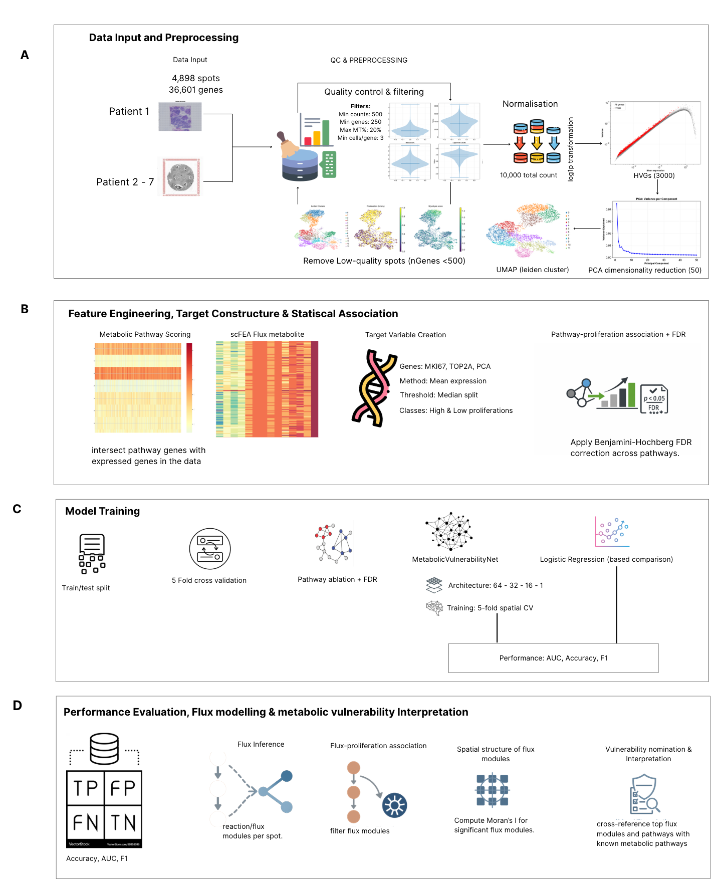
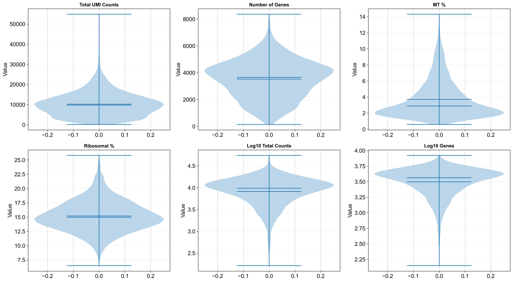

Gallery
Visual Results

Figure 1: Pipeline
Overview of the analysis pipeline for identifying metabolic vulnerabilities in breast cancer using spatial transcriptomics.

Figure 2: Tissue Structure
Tissue Structure and total UMI counts per spot showing spatial variation in sequencing depth.

Figure 3: Quality-Control
Distribution of key quality-control metrics across spots, including total counts, number of detected genes, mitochondrial percentage, spatial density, and library complexity, used to guide filtering thresholds.